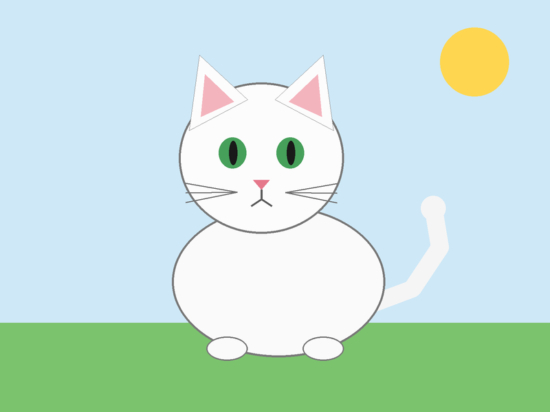

<!doctype html>
<html lang="ro">
<head>
<meta charset="utf-8">
<meta name="viewport" content="width=device-width, initial-scale=1, viewport-fit=cover">
<title>Obiecte într-un document: text, imagini, tabele</title>
<meta name="description" content="Lecția 4, clasa a VII-a: ce obiecte are un document Word (text, imagini, tabele) și cum le inserezi, pas cu pas, cu Word simulat în pagină și provocarea în Word-ul adevărat.">
<link rel="preconnect" href="https://fonts.googleapis.com">
<link rel="preconnect" href="https://fonts.gstatic.com" crossorigin>
<link rel="stylesheet" href="https://fonts.googleapis.com/css2?family=Fraunces:opsz,wght@9..144,600;9..144,800&family=Atkinson+Hyperlegible:ital,wght@0,400;0,700;1,400&family=Chivo+Mono:wght@500;600&display=swap&subset=latin-ext">
<link rel="stylesheet" href="../../../jocuri/_motor/motor.css">
<style>
/* TEMA: pagina Word pe care stau cele trei obiecte (rânduri de text, o poză, un tabel) */
:root{
  --desk:#E8EEF0; --paper:#FFFFFF; --paper2:#F2F6F7; --line:#C9D6DA;
  --ink:#14262B; --ink2:#51666D; --accent:#0E6E78; --accentInk:#FFFFFF; --sel:#D3ECEF;
  --mark:#FFE27A; --markInk:#14262B; --ok:#1B7A4A; --okbg:#E2F4EA; --bad:#B42318; --badbg:#FBE7E4;
  --fd:"Fraunces",Georgia,"Times New Roman",serif; --fb:"Atkinson Hyperlegible","Segoe UI",system-ui,sans-serif; --fm:"Chivo Mono",Consolas,monospace;
}
@media (prefers-color-scheme:dark){:root:not([data-theme="light"]){
  --desk:#0F1A1D; --paper:#18262A; --paper2:#203136; --line:#334A50; --ink:#E4EEF0; --ink2:#A2B6BB;
  --accent:#5CC6D0; --accentInk:#0F1A1D; --sel:#1F4449; --mark:#F2C94C; --markInk:#14262B;
  --ok:#6FD19A; --okbg:#163324; --bad:#FF8A80; --badbg:#3B1D1B;
}}
:root[data-theme="dark"]{
  --desk:#0F1A1D; --paper:#18262A; --paper2:#203136; --line:#334A50; --ink:#E4EEF0; --ink2:#A2B6BB;
  --accent:#5CC6D0; --accentInk:#0F1A1D; --sel:#1F4449; --mark:#F2C94C; --markInk:#14262B;
  --ok:#6FD19A; --okbg:#163324; --bad:#FF8A80; --badbg:#3B1D1B;
}
/* banda: o bucată de pagină cu cele trei obiecte ale lecției, doar CSS */
.banda{min-height:30px;padding:0 10px;display:flex;align-items:center;gap:10px;background:var(--paper)}
.banda .bt{flex:1 1 30%;height:12px;background:repeating-linear-gradient(180deg,var(--ink2) 0 2px,transparent 2px 5px);opacity:.55}
.banda .bi{flex:0 0 34px;height:22px;border:1px solid var(--line);background:radial-gradient(circle at 70% 30%,#F2B632 0 18%,transparent 20%),linear-gradient(160deg,transparent 55%,var(--accent) 56%),var(--sel)}
.banda .bg{flex:0 0 64px;height:20px;border:1px solid var(--ink2);background:linear-gradient(90deg,transparent 32%,var(--ink2) 32% 34%,transparent 34% 66%,var(--ink2) 66% 68%,transparent 68%),linear-gradient(180deg,var(--sel) 0 48%,var(--ink2) 48% 54%,transparent 54%)}
h1{font-weight:800;letter-spacing:-.01em}
h1 em{color:var(--accent);font-style:normal}
h2{font-weight:600}

/* „Uite cum”: bucăți de document desenate ca în Word (nu capturi) */
.ex-tab{border-collapse:collapse;margin:6px 0 10px;font-size:.92rem;max-width:100%}
.ex-tab td{border:1px solid var(--ink2);padding:4px 8px;min-width:2.6em}
.ex-tab tr:first-child td{font-weight:700}
.tasta{font-family:var(--fm);font-size:.85em;padding:1px 6px;border:1px solid var(--line);border-bottom-width:2px;border-radius:4px;background:var(--paper2);white-space:nowrap}

/* ============ SIMULATORUL „word-obiecte”: panglica reală Word + pagina + tastatura + testele ============ */
.wo{display:grid;gap:0}
.wo-rb{border:1px solid var(--line);border-radius:8px 8px 0 0;overflow:hidden;background:var(--paper)}
.wo-rb .rb.pg{--xlg:#2B579A}
.wo-dlg:empty{display:none}
.wo-leg{margin:0;padding:6px 10px;border:1px solid var(--line);border-top:0;background:var(--paper2);font-size:.82rem}
.wo-pag{background:#E4E7EB;padding:10px;border:1px solid var(--line);border-top:0}
.wo-pag.fara-rb{border-top:1px solid var(--line);border-radius:8px 8px 0 0}
.wo-doc,.wo-mini{background:#fff;color:#111;font-family:Calibri,Carlito,"Segoe UI",Arial,sans-serif;font-size:16px;line-height:1.45;padding:16px 14px;min-height:150px;box-shadow:0 1px 3px rgba(0,0,0,.18);overflow-wrap:anywhere}
.wo-mini{min-height:0;padding:10px 12px;margin:6px 0;border:1px solid var(--line);border-radius:6px;box-shadow:none}
.wo-p{margin:0 0 6px;min-height:1.45em;cursor:text;border-radius:2px}
.wo-doc .wo-p:hover{background:#EEF3F8}
.wo-p.titlu,.wo-mini .titlu{font-size:1.35em;font-weight:700;text-align:center}
.wo-car{display:inline-block;width:2px;height:1.1em;background:#111;vertical-align:-.18em;margin-left:1px;animation:wo-clipeste 1.05s steps(1) infinite}
@keyframes wo-clipeste{50%{opacity:0}}
@media (prefers-reduced-motion:reduce){.wo-car{animation:none}}
.wo-pend{background:#FFF3B0}
.wo-tab{display:inline-block;width:2.2em}
.wo-tb{width:100%;border-collapse:collapse;table-layout:fixed;margin:0 0 6px}
.wo-tb td{border:1px solid #222;padding:3px 6px;vertical-align:top;height:1.9em;cursor:text}
.wo-tb td.cur{background:#F4F8FC}
.wo-pic{display:inline-block;position:relative;width:132px;height:96px;vertical-align:bottom;border:1px solid #B5BCC4;cursor:pointer;background-color:#CFE8F7}
.wo-pic.sm{width:66px;height:48px}
.wo-pic.sel{outline:2px solid #5B8BD6;outline-offset:2px}
.wo-pic.fs{background:radial-gradient(circle at 50% 42%,#6B4A2B 0 8%,#F6C21C 9% 19%,transparent 20%),linear-gradient(#2E7D32,#2E7D32) 50% 100%/4px 56% no-repeat,radial-gradient(circle at 84% 18%,#FFE066 0 8%,transparent 9%),linear-gradient(#BFE3F7 0 72%,#7CC36E 72%)}
.wo-pic.ce{background:repeating-linear-gradient(90deg,#7E7E7E 0 7%,transparent 7% 12%) 50% 44%/64% 9% no-repeat,linear-gradient(#8D8D8D,#8D8D8D) 50% 76%/64% 34% no-repeat,linear-gradient(#6F6F6F,#6F6F6F) 26% 70%/13% 50% no-repeat,radial-gradient(ellipse at 50% 125%,#5B9A4A 0 58%,transparent 59%),#CFE8F7}
.wo-pic.lb{background:linear-gradient(#3F8FD0,#2F77B3) 0 100%/100% 36% no-repeat,linear-gradient(135deg,transparent 50%,#6D7F8F 50%) 0 64%/52% 56% no-repeat,linear-gradient(225deg,transparent 50%,#5C6D7C 50%) 100% 64%/52% 56% no-repeat,#DCEFFA}
/* pisica.png din simulator = ACEEAȘI poză pe care elevul o descarcă pentru Word (img/pisica.png), micșorată */
.wo-pic.pi{background:url(img/pisica.png) center/cover no-repeat,#CFE8F7}
.wo-pic.ha{background:linear-gradient(35deg,transparent 47%,#D33 47% 52%,transparent 52%),repeating-linear-gradient(0deg,transparent 0 17px,#CFE0BB 17px 18px),repeating-linear-gradient(90deg,transparent 0 17px,#CFE0BB 17px 18px),#EEF5E4}
.wo-kbd{display:flex;flex-wrap:wrap;gap:6px;align-items:center;margin-top:8px}
.wo-kl{flex:1 1 100%;font-family:var(--fm);font-size:.72rem;letter-spacing:.06em;text-transform:uppercase;color:var(--ink2)}
.wo-in{flex:1 1 150px;min-width:0;font-size:16px;padding:8px 10px;border:1px solid var(--line);border-radius:6px;background:var(--paper);color:var(--ink)}
.wo-in:focus-visible,.wo-k:focus-visible{outline:3px solid var(--accent);outline-offset:1px}
.wo-k{min-height:40px;padding:0 12px;border:1px solid var(--line);border-bottom-width:3px;border-radius:6px;background:var(--paper2);color:var(--ink);font-family:var(--fm);font-size:.88rem;cursor:pointer}
.wo-nota{min-height:1.3em;margin:8px 0 0;font-size:.92rem;color:var(--ink)}
.wo-nota:empty{display:none}
.wo-nota b{color:var(--accent)}
.wo-teste{list-style:none;padding:0;margin:10px 0 0;display:grid;gap:4px}
.wo-teste li{display:flex;gap:8px;align-items:flex-start;font-size:.92rem;padding:5px 8px;border:1px solid var(--line);border-radius:6px;background:var(--paper)}
.wo-teste li.ok{border-color:var(--ok);background:var(--okbg)}
.wo-teste .ic{flex:none;width:1.1em;font-weight:700;color:var(--ink2)}
.wo-teste li.ok .ic{color:var(--ok)}
.wo-jos{display:flex;flex-wrap:wrap;gap:8px;align-items:center;justify-content:space-between;margin-top:8px}
/* meniurile de sub panglică: grila de la Table, lista de la Pictures */
.wo-grila{display:grid;gap:6px;padding:2px 0}
.wo-gl{font-weight:600;font-size:.85rem;color:var(--ink)}
.wo-gg{display:grid;grid-template-columns:repeat(10,22px);gap:2px}
.wo-gc{width:22px;height:22px;padding:0;border:1px solid #9AA3AD;background:#fff;border-radius:0;cursor:pointer}
.wo-gc.on{border-color:#D9822B;background:#FDE7CF}
.wo-grila{width:100%}
@media (pointer:coarse){.wo-gg{grid-template-columns:repeat(10,minmax(0,1fr));width:min(100%,330px)}.wo-gc{width:auto;height:auto;aspect-ratio:1}}
.wo-dos{display:flex;flex-wrap:wrap;gap:6px;align-items:center;padding:8px 10px;border-bottom:1px solid var(--line)}
.wo-dos .wo-bt{min-height:34px;padding:0 10px;font-size:.84rem}
.wo-mi,.wo-meniu{display:grid;gap:1px}
.wo-mi button,.wo-meniu button{text-align:left;padding:6px 10px;border:1px solid transparent;background:none;color:var(--ink);font:inherit;font-size:.85rem;border-radius:4px;cursor:pointer}
.wo-mi button:hover,.wo-meniu button:hover,.wo-mi button:focus-visible,.wo-meniu button:focus-visible{border-color:#2B579A;background:var(--sel)}
.wo-ro{display:block;font-size:.74rem;color:var(--ink2)}
/* ferestrele (Insert Picture, Insert Table) */
.wo-win{border:1px solid #8A94A3;border-radius:8px;background:var(--paper);box-shadow:0 8px 24px rgba(0,0,0,.18);margin:8px 0;overflow:hidden}
.wo-wt{display:flex;justify-content:space-between;align-items:center;gap:8px;padding:6px 10px;background:var(--paper2);font-weight:700;font-size:.9rem}
.wo-wt button{min-width:36px;min-height:32px;border:0;background:none;color:var(--ink);font-size:1rem;cursor:pointer}
.wo-wp{padding:6px 10px;font-size:.84rem;color:var(--ink2);border-bottom:1px solid var(--line)}
.wo-fl{display:flex;flex-wrap:wrap;gap:8px;padding:10px}
.wo-f{display:flex;flex-direction:column;align-items:center;gap:4px;width:98px;padding:6px 4px;border:1px solid transparent;border-radius:6px;background:none;color:var(--ink);font-size:.74rem;cursor:pointer;overflow-wrap:anywhere}
.wo-f .wo-pic{width:72px;height:52px;cursor:inherit}
.wo-f.on{border-color:#3B82C4;background:#DBEAFE;color:#111}
.wo-wb{display:flex;flex-wrap:wrap;gap:8px;align-items:center;justify-content:flex-end;padding:8px 10px;border-top:1px solid var(--line)}
.wo-nume{flex:1 1 100%;font-size:.85rem}
.wo-bt{min-height:38px;padding:0 16px;border:1px solid var(--line);border-radius:4px;background:var(--paper2);color:var(--ink);font:inherit;cursor:pointer}
.wo-bt.pr{background:#2B579A;color:#fff;border-color:#2B579A}
.wo-bt[disabled]{opacity:.45;cursor:not-allowed}
.wo-dt{display:grid;gap:8px;padding:10px}
.wo-dt label{display:flex;justify-content:space-between;align-items:center;gap:10px;font-size:.9rem}
.wo-dt input{width:5em;font-size:16px;padding:4px 6px;border:1px solid var(--line);border-radius:4px;background:var(--paper);color:var(--ink)}
.wo-win .hint{margin:0;padding:0 10px 8px}
.sr-only{position:absolute;width:1px;height:1px;overflow:hidden;clip:rect(0 0 0 0);white-space:nowrap}
</style>
</head>
<body>
<script src="../../../jocuri/_motor/motor.js"></script>
<script src="../../../jocuri/_motor/ui-panglica.js"></script>
<script src="../../../jocuri/_motor/panglica-word.js"></script>
<script>
/* LECȚIA 4, clasa a VII-a, modulul 1 (revizuirea LearningHub, standardul din 27.09.2026).
   Un singur nivel pe pași: pasul 0 „La ce folosește”, 5 pași cu „Încearcă”, atelierul în Word simulat, 5 întrebări.
   Comportamentele simulatorului sunt copiate din Word-ul real (Word 16 prin COM, instanță invizibilă, 27.09.2026):
   Enter la capătul paragrafului = paragraf nou, gol · poza pusă fără Enter se lipește la capătul textului · tabelul pus
   la capătul unui paragraf apare SUB el, urmat de un paragraf gol · cursorul intră în prima celulă · Tab = celula
   următoare, în ultima celulă adaugă un rând · Enter într-o celulă nu mută cursorul, face celula mai înaltă ·
   Enter cu poza selectată o împinge pe rândul de dedesubt · Backspace cu poza selectată o șterge.
   Detaliile și proba: afirmatii.json + surse.md, în același folder. */

/* ---------------- SIMULATORUL „word-obiecte” ---------------- */
const TipWordObiecte=(function(){
'use strict';
const esc=s=>String(s==null?'':s).replace(/[&<>"]/g,c=>({'&':'&amp;','<':'&lt;','>':'&gt;','"':'&quot;'}[c]));
/* comparația textului: fără diacritice, fără majuscule, spațiile strânse, fără punctuația de la capăt
   (îngăduința ține de NOTARE; documentul arată exact ce a tastat elevul) */
const norm=s=>String(s||'').normalize('NFD').replace(/[̀-ͯ]/g,'').replace(/[„”"]/g,'').toLowerCase().replace(/\s+/g,' ').trim().replace(/[.:!;,]+$/,'').trim();
/* pozele din folderul Imagini (Pictures) al calculatorului simulat; desenele sunt CSS */
const FIS={
  'floarea-soarelui.png':{cls:'fs',alt:'desen: o floare-soarelui galbenă, pe cer albastru',dosar:'img'},
  'cetatea-neamt.jpg':{cls:'ce',alt:'desen: zidurile unei cetăți, pe un deal verde',dosar:'img'},
  'lacul-bicaz.jpg':{cls:'lb',alt:'desen: un lac albastru între munți',dosar:'img'},
  'harta-traseului.png':{cls:'ha',alt:'desen: o hartă cu traseul trasat cu roșu',dosar:'img'},
  'pisica.png':{cls:'pi',alt:'desen: o pisică albă pe iarbă, cu soarele sus (aceeași poză pe care o descarci pentru Word)',dosar:'desc'}
};
const LISTA=Object.keys(FIS);
/* folderele din fereastra Insert Picture (în Word: panoul din stânga). Descărcări = unde ajunge poza luată de pe sit */
const DOSARE={img:'Imagini (Pictures)',desc:'Descărcări (Downloads)'};
const undeE=f=>FIS[f]&&FIS[f].dosar==='desc'?` (e în folderul ${DOSARE.desc})`:'';
const P=t=>({k:'p',s:t?[{x:t}]:[]});
const clone=d=>JSON.parse(JSON.stringify(d));
function mk(start){return (start||[]).map(b=>typeof b==='string'?P(b):b.titlu?Object.assign(P(b.titlu),{titlu:true}):b.tabel?{k:'t',c:b.tabel.map(r=>r.slice())}:P(''))}
const ptext=p=>p.s.filter(x=>x.x!=null).map(x=>x.x).join('');
const pimgs=p=>p.s.filter(x=>x.img).map(x=>x.img);
const gol=b=>b.k==='p'&&!ptext(b).trim()&&!pimgs(b).length;
function gaseste(doc,dupa){
  if(dupa&&typeof dupa==='object'&&dupa.poza)return doc.findIndex(b=>b.k==='p'&&pimgs(b).includes(dupa.poza));
  const n=norm(dupa);let i=doc.findIndex(b=>b.k==='p'&&norm(ptext(b))===n);
  if(i<0)i=doc.findIndex(b=>b.k==='p'&&norm(ptext(b)).startsWith(n));
  return i;
}
function urmator(doc,i){for(let j=i+1;j<doc.length;j++)if(!gol(doc[j]))return j;return -1}
function scurt(d){if(d&&typeof d==='object'&&d.poza)return 'poza '+d.poza;const w=String(d).split(' ');return '„'+w.slice(0,4).join(' ')+(w.length>4?'…':'')+'”'}
const cuvColoane=n=>n===1?'o coloană':n+' coloane', cuvRanduri=n=>n===1?'un rând':n+' rânduri';

/* TESTELE: fiecare cerință a sarcinii e un test cu nume, bifat pe loc */
function teste(Q,doc){
  const T=[],add=(ce,ok,cum)=>T.push({ce,ok:!!ok,cum:cum||''});
  const st=mk(Q.start);
  const orig=st.filter(b=>b.k==='p'&&ptext(b).trim()).map(b=>norm(ptext(b)));
  const acum=doc.filter(b=>b.k==='p'&&ptext(b).trim()).map(b=>norm(ptext(b)));
  let j=0;acum.forEach(x=>{if(j<orig.length&&x===orig[j])j++});
  add('Textul de la început a rămas cum era',j===orig.length,'Unul dintre rândurile de la început s-a schimbat: probabil ai tastat în el fără să apeși întâi Enter. Apasă „Ia-o de la capăt” și reia.');
  let nImg=0,nTab=st.filter(b=>b.k==='t').length;
  (Q.cere||[]).forEach(op=>{
    const ia=gaseste(doc,op.dupa),sub=ia>=0?urmator(doc,ia):-1,B=sub>=0?doc[sub]:null;
    if(op.tip==='text'){
      add(`Sub ${scurt(op.dupa)} e un rând nou cu textul „${op.text}”`,B&&B.k==='p'&&!pimgs(B).length&&norm(ptext(B))===norm(op.text),
        `Pune cursorul la capătul rândului ${scurt(op.dupa)}, apasă Enter, apoi tastează exact „${op.text}”.`);
    }else if(op.tip==='poza'){
      nImg++;
      const ip=doc.findIndex(b=>b.k==='p'&&pimgs(b).includes(op.fisier)),Pp=ip>=0?doc[ip]:null;
      add(`Poza ${op.fisier} e în document`,!!Pp,`Inserare (Insert) › Imagini (Pictures) › Acest dispozitiv… (This Device…), clic pe ${op.fisier}${undeE(op.fisier)}, apoi Inserare (Insert).`);
      add(`Poza ${op.fisier} stă singură pe rândul ei`,Pp&&!ptext(Pp).trim()&&pimgs(Pp).length===1,
        Pp&&ptext(Pp).trim()?'Poza s-a lipit de text, pe același rând. Înainte de inserare: clic la capătul paragrafului, apoi Enter.':'Poza trebuie să stea singură pe un rând.');
      add(`Poza ${op.fisier} e imediat sub ${scurt(op.dupa)}`,Pp&&sub===ip,`Pune cursorul pe rândul gol de sub ${scurt(op.dupa)} înainte să inserezi poza.`);
    }else if(op.tip==='tabel'){
      nTab++;
      const tb=B&&B.k==='t'?B:null;
      add(`Sub ${scurt(op.dupa)} e un tabel`,!!tb,`Pune cursorul la capătul rândului ${scurt(op.dupa)}, apoi Inserare (Insert) › Tabel (Table).`);
      const t=tb||doc.find((b,k)=>b.k==='t'&&k>ia),R=t?t.c.length:0,C=t&&t.c[0]?t.c[0].length:0;
      add(`Tabelul are ${cuvColoane(op.c)} și ${cuvRanduri(op.r)}`,t&&R===op.r&&C===op.c,
        t?`Acum are ${cuvColoane(C)} și ${cuvRanduri(R)}. Pe grilă numeri întâi coloanele (de-a latul), apoi rândurile (în jos).${R>op.r?' Ai apăsat Tab în ultima celulă? Așa apare un rând nou.':''} Apasă „Ia-o de la capăt” și reia.`:'Încă nu există tabelul.');
      if(op.celule){
        let gres=null;
        if(t&&R===op.r&&C===op.c)outer:for(let r=0;r<op.r;r++)for(let c=0;c<op.c;c++){if(norm(t.c[r][c])!==norm(op.celule[r][c])){gres=[r,c];break outer}}
        add('În celule scrie exact ce cere sarcina',t&&R===op.r&&C===op.c&&!gres,
          gres?`În rândul ${gres[0]+1}, coloana ${gres[1]+1} trebuie să scrie „${op.celule[gres[0]][gres[1]]}”; acum scrie „${t.c[gres[0]][gres[1]].trim()}”. Atinge celula și corectează cu ⌫; de la o celulă la alta treci cu Tab.`:'Întâi tabelul cu mărimea cerută, apoi textul din celule.');
      }
    }
  });
  const imgs=doc.reduce((a,b)=>a+(b.k==='p'?pimgs(b).length:0),0),tabs=doc.filter(b=>b.k==='t').length;
  if((Q.cere||[]).some(o=>o.tip!=='text'))
    add('Nu sunt obiecte în plus',imgs===nImg&&tabs===nTab,`În document sunt ${imgs} ${imgs===1?'poză':'poze'} și ${tabs} ${tabs===1?'tabel':'tabele'}, iar sarcina cere ${nImg} și ${nTab}. Apasă „Ia-o de la capăt”.`);
  return T;
}
/* soluția: aceleași operații ca în Word (poza pe rândul ei; tabelul sub paragraf, urmat de un paragraf gol) */
function solutie(Q){
  const d=mk(Q.start);
  (Q.cere||[]).forEach(op=>{
    const i=gaseste(d,op.dupa);
    if(op.tip==='text')d.splice(i+1,0,P(op.text));
    else if(op.tip==='poza')d.splice(i+1,0,{k:'p',s:[{img:op.fisier}]});
    else if(op.tip==='tabel')d.splice(i+1,0,{k:'t',c:op.celule?op.celule.map(r=>r.slice()):Array.from({length:op.r},()=>Array(op.c).fill(''))},P(''));
  });
  return d;
}
/* greșeala tipică a copilului: poza inserată fără Enter (lipită de text); altfel tabelul cu rândurile și coloanele
   inversate; altfel textul tastat fără Enter, în coada rândului de deasupra */
function gresitDoc(Q){
  const ops=Q.cere||[],d=mk(Q.start);
  const pz=ops.find(o=>o.tip==='poza'),tb=ops.find(o=>o.tip==='tabel');
  ops.forEach(op=>{
    const i=gaseste(d,op.dupa);
    if(op.tip==='poza'){if(op===pz)d[i].s.push({img:op.fisier});else d.splice(i+1,0,{k:'p',s:[{img:op.fisier}]})}
    else if(op.tip==='tabel'){
      let c=op.celule?op.celule.map(r=>r.slice()):Array.from({length:op.r},()=>Array(op.c).fill(''));
      if(!pz&&op===tb)c=op.c!==op.r?Array.from({length:op.c},(_,r)=>Array.from({length:op.r},(_,k)=>(c[k]&&c[k][r])||'')):c.slice(0,op.r-1);
      d.splice(i+1,0,{k:'t',c},P(''));
    }
    else if(op.tip==='text'){if(!pz&&!tb)d[i].s.push({x:' '+op.text});else d.splice(i+1,0,P(op.text))}
  });
  return d;
}

let NR=0;
function render(Q,body,api){
  const U=Q.unelte||['text','inserare'],cuRb=U.includes('inserare');
  const PW=window.PANGLICA_WORD,UP=window.UiPanglica,real=!!(PW&&UP);
  let doc=mk(Q.start),cur={b:0},sel=null,pend='',fila='TabHome',meniu=null,dlg=null,ales=null,gc=0,gr=0,dosar='img',gAtins=null;
  const id='wo-in-'+(++NR);
  let ultimulPointer='mouse',spusAtingere=false;
  body.innerHTML=`<div class="wo">
    ${cuRb?'<div class="wo-rb" role="toolbar" aria-label="Panglica din Word"></div><p class="hint wo-leg">Aici butoanele panglicii au doar iconițe (în Word au și numele dedesubt). Pe fila <b>Insert</b> (Inserare): <b>Table</b> (Tabel) = iconița cu pătrățele; <b>Pictures</b> (Imagini) = iconița cu o poză cu munte. Pe calculator, ține mouse-ul pe un buton ca să-i vezi numele.</p><div class="wo-dlg"></div>':''}
    <div class="wo-pag${cuRb?'':' fara-rb'}"><div class="wo-doc" role="document" aria-label="Documentul Word simulat"></div></div>
    <div class="wo-kbd"><label class="wo-kl" for="${id}">Tastatura: atinge caseta și tastează — literele apar în document, la cursor</label>
      <input class="wo-in" id="${id}" type="text" enterkeyhint="enter" autocomplete="off" autocapitalize="off" autocorrect="off" spellcheck="false" placeholder="tastează aici">
      <button type="button" class="wo-k" data-k="enter" aria-label="Tasta Enter">Enter ↵</button>
      <button type="button" class="wo-k" data-k="tab" aria-label="Tasta Tab">Tab ⇥</button>
      <button type="button" class="wo-k" data-k="bs" aria-label="Tasta Backspace, șterge litera din stânga cursorului">⌫</button></div>
    <p class="wo-nota" aria-live="polite"></p>
    <ul class="wo-teste" aria-label="Testele sarcinii"></ul>
    <div class="wo-jos"><span class="hint">În simulator atingi un rând și cursorul se pune la capătul lui (în Word poți da clic oriunde în text).</span>
      <button type="button" class="btn ghost sm" data-k="reset">Ia-o de la capăt</button></div>
  </div>`;
  const $=s=>body.querySelector(s),rbEl=$('.wo-rb'),dlgEl=$('.wo-dlg'),docEl=$('.wo-doc'),inp=$('.wo-in'),notaEl=$('.wo-nota'),testEl=$('.wo-teste');
  const spune=h=>{notaEl.innerHTML=h||''};
  const CAR='<span class="wo-car" aria-hidden="true"></span>';

  /* ---- panglica ---- */
  function grila(){
    let g='';for(let r=1;r<=8;r++)for(let c=1;c<=10;c++)g+=`<button type="button" class="wo-gc${c<=gc&&r<=gr?' on':''}" data-gc="${c}" data-gr="${r}" aria-label="${cuvColoane(c)}, ${cuvRanduri(r)}"></button>`;
    return `<div class="wo-grila"><div class="wo-gl" aria-live="polite">${gc?`${gc}x${gr} Table`:'Insert Table'}</div><div class="wo-gg">${g}</div>
      <div class="wo-mi"><button type="button" data-wo="dlg-tabel">Insert Table...<span class="wo-ro">Inserare tabel…</span></button>
      <button type="button" data-wo="nesim" data-n="Draw Table">Draw Table</button><button type="button" data-wo="nesim" data-n="Convert Text to Table">Convert Text to Table...</button>
      <button type="button" data-wo="nesim" data-n="Excel Spreadsheet">Excel Spreadsheet</button><button type="button" data-wo="nesim" data-n="Quick Tables">Quick Tables ›</button></div></div>`;
  }
  function meniuPoze(){
    return `<div class="wo-meniu"><button type="button" data-wo="dlg-poza">This Device...<span class="wo-ro">Acest dispozitiv…</span></button>
      <button type="button" data-wo="net" data-n="Stock Images...">Stock Images...<span class="wo-ro">Imagini stoc…</span></button>
      <button type="button" data-wo="net" data-n="Online Pictures...">Online Pictures...<span class="wo-ro">Imagini online…</span></button></div>`;
  }
  function drawRb(){
    if(!rbEl)return;
    if(real){
      UP.stil();
      const leg={TableInsertGallery:{attr:'data-wo="tabel"',title:'Tabel (Table)'},FlyoutAnchorInsertPictures:{attr:'data-wo="poze"',title:'Imagini (Pictures)'}},men={};
      if(fila==='TabInsert'&&meniu==='tabel')men.TableInsertGallery=grila();
      if(fila==='TabInsert'&&meniu==='poze')men.FlyoutAnchorInsertPictures=meniuPoze();
      rbEl.innerHTML=UP.html(PW,{fila,legaturi:leg,meniu:men});
    }else{ /* fără datele panglicii: două file și cele două butoane */
      rbEl.innerHTML=`<div class="rb pg"><div class="tabs" role="tablist"><span class="pg-fisier">File</span>
        <button type="button" data-tab="TabHome" class="${fila==='TabHome'?'on':''}">Home</button><button type="button" data-tab="TabInsert" class="${fila==='TabInsert'?'on':''}">Insert</button></div>
        <div class="pg-banda" style="padding:6px;gap:6px">${fila==='TabInsert'?'<button type="button" class="wo-bt" data-wo="tabel" title="Tabel (Table)">Table ▾</button><button type="button" class="wo-bt" data-wo="poze" title="Imagini (Pictures)">Pictures ▾</button>':'<span class="hint">Butoanele filei Home (Pornire)</span>'}</div>
        ${fila==='TabInsert'&&meniu?`<div class="pg-jos"><div class="m">${meniu==='tabel'?grila():meniuPoze()}</div></div>`:''}</div>`;
    }
  }
  function drawDlg(){
    if(!dlgEl)return;
    if(dlg==='poza')dlgEl.innerHTML=`<div class="wo-win" role="dialog" aria-label="Fereastra Insert Picture (Inserare imagine)">
      <div class="wo-wt"><span>Insert Picture</span><button type="button" data-wo="x" aria-label="Închide fereastra">✕</button></div>
      <div class="wo-dos" role="group" aria-label="Folderele (în Word, în stânga ferestrei)"><span class="hint">Folderele:</span>${Object.entries(DOSARE).map(([k,n])=>`<button type="button" class="wo-bt${k===dosar?' pr':''}" data-dosar="${k}" aria-pressed="${k===dosar}">${n}</button>`).join('')}</div>
      <div class="wo-wp">Acest PC › ${DOSARE[dosar]}</div>
      <div class="wo-fl">${LISTA.filter(f=>FIS[f].dosar===dosar).map(f=>`<button type="button" class="wo-f${f===ales?' on':''}" data-f="${f}" aria-pressed="${f===ales}"><span class="wo-pic ${FIS[f].cls}" role="img" aria-label="${esc(FIS[f].alt)}"></span><span>${f}</span></button>`).join('')}</div>
      <div class="wo-wb"><span class="wo-nume">File name: <b>${esc(ales||'')}</b></span>
        <button type="button" class="wo-bt pr" data-wo="ins-poza" ${ales?'':'disabled'}>Insert</button><button type="button" class="wo-bt" data-wo="x">Cancel</button></div>
      <p class="hint">În Word în română: fereastra „Inserare imagine”, butoanele „Inserare” și „Anulare”.</p></div>`;
    else if(dlg==='tabel')dlgEl.innerHTML=`<div class="wo-win" role="dialog" aria-label="Fereastra Insert Table (Inserare tabel)">
      <div class="wo-wt"><span>Insert Table</span><button type="button" data-wo="x" aria-label="Închide fereastra">✕</button></div>
      <div class="wo-dt"><label>Number of columns: <input type="number" min="1" max="10" value="5" data-dc></label>
        <label>Number of rows: <input type="number" min="1" max="12" value="2" data-dr></label></div>
      <div class="wo-wb"><button type="button" class="wo-bt pr" data-wo="ins-tabel-dlg">OK</button><button type="button" class="wo-bt" data-wo="x">Cancel</button></div>
      <p class="hint">În română: „Număr de coloane”, „Număr de rânduri”.</p></div>`;
    else dlgEl.innerHTML='';
  }
  /* ---- documentul ---- */
  function parHtml(p,i){
    const aici=cur&&cur.b===i&&cur.r==null;
    let h=p.s.map((x,k)=>x.img?`<span class="wo-pic ${(FIS[x.img]||{}).cls||''}${sel&&sel.b===i&&sel.k===k?' sel':''}" data-pb="${i}" data-pk="${k}" role="img" aria-label="${esc((FIS[x.img]||{}).alt||x.img)}${sel&&sel.b===i&&sel.k===k?' (selectată)':''}"></span>`
      :esc(x.x).replace(/\t/g,'<span class="wo-tab"></span>')).join('');
    if(aici&&!sel)h+=(pend?`<span class="wo-pend">${esc(pend)}</span>`:'')+CAR;
    return `<p class="wo-p${p.titlu?' titlu':''}" data-b="${i}">${h}</p>`;
  }
  function tabHtml(t,i){
    return `<table class="wo-tb" data-b="${i}">${t.c.map((row,r)=>`<tr>${row.map((v,c)=>{const aici=cur&&cur.b===i&&cur.r===r&&cur.c===c;
      return `<td class="${aici?'cur':''}" data-b="${i}" data-r="${r}" data-c="${c}">${esc(v).replace(/\n/g,'<br>')}${aici?(pend?`<span class="wo-pend">${esc(pend)}</span>`:'')+CAR:''}</td>`}).join('')}</tr>`).join('')}</table>`;
  }
  function drawDoc(){docEl.innerHTML=doc.map((b,i)=>b.k==='t'?tabHtml(b,i):parHtml(b,i)).join('')}
  function vDoc(){const d=clone(doc);if(pend)scrie(d,pend,true);return d}
  function drawTeste(){testEl.innerHTML=teste(Q,vDoc()).map(t=>`<li class="${t.ok?'ok':''}"><span class="ic" aria-hidden="true">${t.ok?'✔':'○'}</span><span>${esc(t.ce)}${t.ok?'<span class="sr-only"> — gata</span>':''}</span></li>`).join('')}
  function draw(){drawRb();drawDlg();drawDoc();drawTeste()}

  /* ---- operațiile, ca în Word ---- */
  function scrie(d,t,virtual){
    if(!cur)return;
    if(cur.r!=null){const T=d[cur.b];T.c[cur.r][cur.c]+=t;return}
    const p=d[cur.b],u=p.s[p.s.length-1];
    if(u&&u.x!=null)u.x+=t;else p.s.push({x:t});
  }
  function commit(){if(!pend)return;scrie(doc,pend);pend='';inp.value=''}
  const blocatSel=()=>{if(sel){spune('Poza e <b>selectată</b> (are chenar). Ca să scrii după ea, atinge rândul ei în dreapta pozei: cursorul se pune după poză. (În Word, ce tastezi cu poza selectată nu ajunge după ea; poate chiar s-o înlocuiască.)');inp.value='';pend='';return true}return false};
  function enter(){
    commit();
    if(sel){ /* Word: Enter cu poza selectată împarte rândul înaintea pozei, iar poza coboară pe rândul următor */
      const p=doc[sel.b],a={k:'p',s:p.s.slice(0,sel.k)},b={k:'p',s:p.s.slice(sel.k)};
      if(p.titlu)a.titlu=true;
      doc.splice(sel.b,1,a,b);sel={b:sel.b+1,k:0};cur={b:sel.b};return}
    if(cur.r!=null){doc[cur.b].c[cur.r][cur.c]+='\n';return}
    doc.splice(cur.b+1,0,P(''));cur={b:cur.b+1};
  }
  function tab(){
    commit();if(blocatSel())return;
    if(cur.r==null){scrie(doc,'\t');return}
    const T=doc[cur.b];let r=cur.r,c=cur.c+1;
    if(c>=T.c[0].length){c=0;r++}
    if(r>=T.c.length){T.c.push(Array(T.c[0].length).fill(''));spune('Tab în <b>ultima celulă</b> a adăugat un rând nou.')}
    cur={b:cur.b,r,c};
  }
  function backspace(){
    if(pend){pend=pend.slice(0,-1);inp.value=pend;return}
    if(sel){doc[sel.b].s.splice(sel.k,1);cur={b:sel.b};sel=null;spune('Poza selectată a fost ștearsă.');return}
    if(cur.r!=null){const T=doc[cur.b];T.c[cur.r][cur.c]=T.c[cur.r][cur.c].slice(0,-1);return}
    const p=doc[cur.b],u=p.s[p.s.length-1];
    if(u&&u.x!=null){u.x=u.x.slice(0,-1);if(!u.x)p.s.pop();return}
    if(u&&u.img){spune('În Word, ⌫ nu șterge poza de lângă cursor. Ca s-o ștergi: atinge poza (se selectează), apoi ⌫.');return}
    const prev=doc[cur.b-1];
    if(prev&&prev.k==='p'){doc.splice(cur.b,1);cur={b:cur.b-1}}
  }
  function punePoza(f){
    commit();
    if(cur.r!=null){spune('Cursorul e într-o celulă de tabel. În lecția asta pui poza în afara tabelului: atinge întâi rândul unde vrei poza.');return false}
    if(sel){spune('O poză e selectată. Atinge întâi rândul unde vrei poza nouă.');return false}
    const p=doc[cur.b];p.s.push({img:f});sel={b:cur.b,k:p.s.length-1};
    spune(`Poza <b>${esc(f)}</b> a apărut la cursor și e <b>selectată</b> (are chenar).`);return true;
  }
  function puneTabel(c,r){
    commit();
    if(cur.r!=null){spune('Cursorul e într-o celulă: în Word ai pune un tabel ÎN tabel. În lecția asta nu facem asta; atinge întâi rândul de sub tabel.');return false}
    if(sel){spune('O poză e selectată. Atinge întâi rândul unde vrei tabelul.');return false}
    const T={k:'t',c:Array.from({length:r},()=>Array(c).fill(''))};
    if(gol(doc[cur.b])&&!doc[cur.b].titlu){doc.splice(cur.b,1,T,P(''))}else{doc.splice(cur.b+1,0,T,P(''));cur={b:cur.b+1}}
    cur={b:doc.indexOf(T),r:0,c:0};
    spune(`A apărut un tabel cu <b>${cuvColoane(c)}</b> și <b>${cuvRanduri(r)}</b>. Cursorul e în prima celulă.`);return true;
  }
  const inchide=()=>{meniu=null;dlg=null;ales=null;gc=gr=0;gAtins=null;dosar='img'};
  /* după o comandă dată cu mouse-ul, tastatura scrie din nou în document (în Word tastezi direct, fără alt clic) */
  const focusIn=()=>{if(ultimulPointer==='mouse')inp.focus({preventScroll:true})};

  /* ---- evenimentele ---- */
  body.addEventListener('pointerdown',e=>{ultimulPointer=e.pointerType||'mouse'},true);
  docEl.addEventListener('click',e=>{
    if(api.done())return;spune('');
    const im=e.target.closest('.wo-pic'),td=e.target.closest('td'),p=e.target.closest('.wo-p');
    commit();
    if(im){sel={b:+im.dataset.pb,k:+im.dataset.pk};cur={b:sel.b}}
    else if(td){sel=null;cur={b:+td.dataset.b,r:+td.dataset.r,c:+td.dataset.c}}
    else if(p){sel=null;cur={b:+p.dataset.b}}
    else return;
    draw();
    if(ultimulPointer==='mouse')inp.focus({preventScroll:true});
    else if(!spusAtingere){spusAtingere=true;spune('Pe telefon: rândul nou îl faci cu butonul <b>Enter ↵</b> de sub document, iar ca să tastezi atingi caseta „Tastatura”.')}
  });
  inp.addEventListener('input',()=>{
    if(api.done()){inp.value='';return}
    if(blocatSel()){drawDoc();return}
    pend=inp.value;drawDoc();drawTeste();
  });
  inp.addEventListener('keydown',e=>{
    if(api.done())return;
    if(e.key==='Enter'){e.preventDefault();pend=inp.value;enter();draw()}
    else if(e.key==='Tab'&&!e.shiftKey){e.preventDefault();pend=inp.value;tab();draw()}   /* Shift+Tab rămâne ieșirea din casetă */
    else if(e.key==='Backspace'&&!inp.value){e.preventDefault();backspace();draw()}
  });
  body.addEventListener('click',e=>{
    const k=e.target.closest('[data-k]');
    if(k&&body.contains(k)){
      if(api.done())return;spune('');pend=inp.value;
      if(k.dataset.k==='enter')enter();else if(k.dataset.k==='tab')tab();else if(k.dataset.k==='bs')backspace();
      else if(k.dataset.k==='reset'){doc=mk(Q.start);cur={b:0};sel=null;pend='';inp.value='';fila='TabHome';inchide();spune('Documentul e din nou ca la început.')}
      draw();focusIn();return;
    }
    if(!rbEl&&!dlgEl)return;
    const b=e.target.closest('button');if(!b||!(rbEl.contains(b)||dlgEl.contains(b)))return;
    if(api.done())return;spune('');
    if(b.dataset.tab){fila=b.dataset.tab;meniu=null;drawRb();return}
    if(b.dataset.nesim){spune(`„${esc(b.getAttribute('aria-label'))}” e aici și în Word, dar în lecția asta nu-l folosim.`);return}
    const w=b.dataset.wo;
    if(b.dataset.gc){const c=+b.dataset.gc,r=+b.dataset.gr;
      /* pe ecran cu atingere nu există „trecut cu mouse-ul”: prima atingere arată mărimea, a doua pune tabelul */
      if(ultimulPointer!=='mouse'&&!(gAtins&&gAtins.c===c&&gAtins.r===r)){gAtins={c,r};grilaLa(c,r);const l=body.querySelector('.wo-gl');if(l)l.textContent=`${c}x${r} Table — atinge încă o dată ca să-l pui`;return}
      if(puneTabel(c,r))inchide();draw();focusIn();return}
    if(b.dataset.dosar){dosar=b.dataset.dosar;ales=null;drawDlg();return}
    if(b.dataset.f){ales=b.dataset.f;drawDlg();return}
    if(w==='tabel'){meniu=meniu==='tabel'?null:'tabel';gc=gr=0;dlg=null;drawRb();drawDlg();return}
    if(w==='poze'){meniu=meniu==='poze'?null:'poze';dlg=null;drawRb();drawDlg();return}
    if(w==='dlg-poza'){meniu=null;dlg='poza';ales=null;dosar='img';draw();return}
    if(w==='dlg-tabel'){meniu=null;dlg='tabel';draw();return}
    if(w==='net'){spune(`„${esc(b.dataset.n)}” aduce poze de pe internet. Azi iei poza din calculator: <b>This Device… (Acest dispozitiv…)</b>.`);return}
    if(w==='nesim'){spune(`„${esc(b.dataset.n)}” e și în Word, dar în lecția asta nu-l folosim.`);return}
    if(w==='x'){dlg=null;ales=null;drawDlg();focusIn();return}
    if(w==='ins-poza'&&ales){if(punePoza(ales))inchide();draw();focusIn();return}
    if(w==='ins-tabel-dlg'){
      const c=Math.max(1,Math.min(10,parseInt(dlgEl.querySelector('[data-dc]').value,10)||1)),r=Math.max(1,Math.min(12,parseInt(dlgEl.querySelector('[data-dr]').value,10)||1));
      if(puneTabel(c,r))inchide();draw();focusIn();return}
  });
  body.addEventListener('dblclick',e=>{const f=e.target.closest('.wo-f');if(f&&!api.done()){ales=f.dataset.f;if(punePoza(ales))inchide();draw();focusIn()}});
  /* grila: trecând cu mouse-ul (sau cu Tab de pe tastatură) peste pătrățele, se colorează mărimea, ca în Word */
  body.addEventListener('pointerover',e=>{const g=e.target.closest('.wo-gc');if(g)grilaLa(+g.dataset.gc,+g.dataset.gr)});
  body.addEventListener('focusin',e=>{const g=e.target.closest('.wo-gc');if(g)grilaLa(+g.dataset.gc,+g.dataset.gr)});
  function grilaLa(c,r){gc=c;gr=r;body.querySelectorAll('.wo-gc').forEach(x=>x.classList.toggle('on',+x.dataset.gc<=c&&+x.dataset.gr<=r));const l=body.querySelector('.wo-gl');if(l)l.textContent=`${c}x${r} Table`}

  const nav=api.checkButton(()=>{
    pend=inp.value;commit();sel=null;draw();
    const T=teste(Q,doc),bad=T.filter(t=>!t.ok);
    if(!bad.length){nav.innerHTML='';api.resolve(true);return}
    api.resolve(false,`${T.length-bad.length} din ${T.length} teste trecute. ${bad[0].cum}`);
    api.revealButton(()=>{doc=solutie(Q);cur={b:0};sel=null;pend='';inp.value='';inchide();draw();nav.innerHTML='';
      api.giveUp('documentul arată acum ca în sarcină: uită-te unde stă fiecare obiect și ce e în celule.')});
  });
  body._wo={set:d=>{doc=d;cur={b:0};sel=null;pend='';inp.value='';inchide();draw()}};
  draw();
}
return {render,rezolva(Q,body){body._wo.set(solutie(Q))},gresit(Q,body){body._wo.set(gresitDoc(Q))},teste,solutie,gresitDoc};
})();

/* ---------------- conținutul lecției ---------------- */
const fig=(src,w,h,alt,cap)=>`<figure class="captura"><a href="${src}" target="_blank"></a><figcaption>${cap}</figcaption></figure>`;
const IMG_OBIECTE='../../../jocuri/word-obiecte-vii/img/obiecte-document.webp';
const IMG_INSERARE='../../../jocuri/word-obiecte-vii/img/inserare-imagini-tabel.webp';
const IMG_GRILA='../../../jocuri/word-obiecte-vii/img/inserare-tabel-grila.webp';
const IMG_TABEL='img/tabel-rand-coloana-celula.webp';
const K=s=>s.split('+').map(k=>`<kbd>${k}</kbd>`).join('+');
const CAR='<span class="wo-car" aria-hidden="true"></span>';
const PROG='Obiecte într-un document: text, imagini, tabele';
/* provocarea din Word-ul adevărat (pasul „Acum în aplicația adevărată” și diploma). Ordinea evită clicul „în dreapta pozei”:
   o poză adevărată ocupă tot rândul (judecătorul, J05), deci textul și tabelul vin întâi, iar poza la urmă, între paragrafe. */
const PROVOCARE=[
  `Descarcă poza pentru referat: <a href="img/pisica.png" download="pisica.png">pisica.png</a>. Ajunge în folderul <b>Descărcări (Downloads)</b>.`,
  `Deschide <b>Word</b> și fă un document nou: ${K('Ctrl+N')}. Scrie titlul <b>Pisica</b> și apasă <kbd>Enter</kbd>. Scrie apoi 2-3 propoziții despre pisici (cum arată, ce fac).`,
  `Apasă <kbd>Enter</kbd> și scrie <b>Ce mănâncă:</b>. Nu mai apăsa nimic: cursorul rămâne la capătul acestui rând.`,
  `Pe fila <b>Inserare (Insert)</b> apasă <b>Tabel (Table)</b> și alege pe grilă <b>2x3</b> (2 coloane, 3 rânduri). Tabelul apare sub „Ce mănâncă:”, cu cursorul în prima celulă. Tastezi <b>Hrana</b>, <kbd>Tab</kbd>, <b>Când</b>, <kbd>Tab</kbd>, <b>Lapte</b>, <kbd>Tab</kbd>, <b>dimineața</b>, <kbd>Tab</kbd>, <b>Pește</b>, <kbd>Tab</kbd>, <b>seara</b>. După „seara” nu mai apeși <kbd>Tab</kbd>.`,
  `Acum poza. Dă clic la capătul ultimei propoziții despre pisici și apasă <kbd>Enter</kbd>: ai un rând gol deasupra lui „Ce mănâncă:”. Dă clic pe fila <b>Inserare (Insert)</b> (după tabel, Word poate trece singur pe altă filă), apoi <b>Imagini (Pictures)</b> › <b>Acest dispozitiv… (This Device…)</b>; în Word 2016 se deschide direct fereastra. În fereastră, în stânga, dă clic pe <b>Descărcări (Downloads)</b>, apoi pe <b>pisica.png</b> și pe <b>Inserare (Insert)</b>. Nu găsești pisica.png în Descărcări (Downloads)? Dă clic în stânga pe <b>Imagini (Pictures)</b>, alege orice poză de acolo și apasă <b>Inserare (Insert)</b>.`,
  `Verifică singur, de sus în jos, ce vezi în document: (1) titlul „Pisica”; (2) propozițiile tale; (3) poza, singură pe rândul ei, fără text lângă ea; (4) rândul „Ce mănâncă:”; (5) tabelul cu 2 coloane și 3 rânduri, fără rânduri goale, cu Hrana și Când pe primul rând. Ceva nu se potrivește? Recitește pasul acela și repară.`,
  `Salvează cu ${K('Ctrl+S')}, cu numele tău, de exemplu <code>Popescu_Ana_obiecte.docx</code>, în folderul <b>Documente (Documents)</b>, dacă profesorul n-a scris pe tablă alt folder.`
];

JocMotor.porneste({
  cheie:'lectie_vii_m1_l04',
  mod:'lectie',   // motorul în modul lecție (27.09.2026): firimituri spre lectii/vii/, „Lecția 4”, „Acum în aplicația adevărată” înainte de verificare
  titlu:'Obiecte într-un document: text, imagini, tabele',
  marca:'Lecția 4 · <b>Obiecte în document</b>',
  h1:'Obiecte într-un document: <em>text, imagini, tabele</em>',
  clasa:'a VII-a', unitate:'VII-U1', unitateTitlu:'Tehnoredactare: editorul de texte',
  competente:['CS.1.1','CS.3.1'], lectii:'4',
  eticheta:'Lecții TIC',
  acasa:{href:'../../../hub/index.html',text:'LearningHub'},
  ancoraText:'Programa (OMEN 3393/2017): CS.1.1, CS.3.1 · unitatea VII-U1 „Tehnoredactare: editorul de texte” · lecția 4 din modulul 1 · conținutul: „Obiecte într-un document: text, imagini, tabele”',
  banda:'<span class="bt"></span><span class="bi"></span><span class="bt"></span><span class="bg"></span>',
  intro:`<p>Afli din ce <b>obiecte</b> e făcut un document Word — text, imagini, tabele — și le pui chiar tu: întâi în Word-ul simulat din pagină, apoi în Word-ul adevărat.</p>
<p><b>Ai nevoie de:</b> lecția 2 (panglica din Word, cu filele <b>Pornire (Home)</b> și <b>Inserare (Insert)</b>) și lecția 3 (faci un document nou cu ${K('Ctrl+N')} și îl salvezi cu ${K('Ctrl+S')}).</p>`,
  cum:`<p><b>Poți lucra singur, fără profesor.</b> Citești un pas, te uiți la „Uite cum”, faci exercițiul „Încearcă tu”. În exerciții, după o greșeală apare singur un indiciu, iar după două greșeli vezi răspunsul (la Word-ul simulat, cu butonul „Arată-mi răspunsul”). Urmează atelierul (Word-ul simulat), apoi pasul „Acum în aplicația adevărată” (faci un referat în Word, singur) și, la final, 5 întrebări de verificare. La întrebări, indiciul îl ceri cu „Am nevoie de un indiciu”, iar după a doua greșeală vezi răspunsul.</p>`,
  nivele:[
{t:'Obiecte într-un document: text, imagini, tabele',lectii:[4],continuturi:[PROG],final:true,
 obiectiv:'pui într-un document Word, la locul potrivit, un text, o imagine din calculator și un tabel, și scrii în celulele tabelului.',
 pasi:[
  /* ---------- pasul 0 ---------- */
  {t:'La ce folosește',
   text:`<p>Uită-te la documentele din jurul tău. <strong>Meniul</strong> de la cantină are numele felurilor scrise cu litere, o <strong>poză</strong> cu mâncarea și prețurile așezate ordonat, în căsuțe. Un <strong>referat</strong> are un text, o fotografie și, uneori, căsuțe cu date. Pe avizierul clasei, <strong>orarul</strong> stă tot în căsuțe: zilele de-a latul, orele de sus în jos.</p>
<p>Toate se pot face în Word. Azi afli din ce bucăți e făcut un document și cum pui în el, pe lângă text, o imagine și un tabel.</p>
${fig(IMG_OBIECTE,670,540,'Un referat în Word despre floarea-soarelui: sus un paragraf de text, la mijloc un desen cu floarea, jos un tabel cu trei coloane; fiecare parte e încadrată cu roșu','Un referat făcut în Word. Cu roșu sunt încadrate un text, o imagine și un tabel; titlul și rândurile de sub poză sunt tot text.')}`},
  /* ---------- pasul 1 ---------- */
  {t:'Trei feluri de obiecte',
   text:`<p>Fiecare bucată dintr-un document se numește <mark>obiect</mark>. Azi lucrăm cu trei feluri de obiecte:</p>
<ul><li><strong>textul</strong>: literele pe care le tastezi;</li>
<li><strong>imaginea</strong>: o fotografie sau un desen; nu scrii în ea, doar o privești;</li>
<li><strong>tabelul</strong>: căsuțe așezate pe <strong>rânduri</strong> (de-a latul) și pe <strong>coloane</strong> (de sus în jos); în fiecare căsuță poți scrie.</li></ul>
<p>Alegi obiectul după ce vrei să afle cititorul: să <strong>vadă</strong> cum arată ceva → imagine; să citească <strong>date</strong> așezate ordonat (note, ore, prețuri) → tabel; să citească o <strong>explicație</strong> → text.</p>`,
   exemplu:`<p>În referatul „Floarea-soarelui” din captura de la pasul 0:</p><ul><li>„Floarea-soarelui este o plantă înaltă…” → <strong>text</strong> (explică);</li><li>desenul cu floarea → <strong>imagine</strong> (o vezi);</li><li>săptămâna, înălțimea și frunzele, în căsuțe → <strong>tabel</strong> (date).</li></ul>`,
   altfel:`<p>Gândește-te la un caiet de proiect: scrii cu pixul (text), lipești o poză (imagine) și desenezi cu rigla căsuțe pentru date (tabel). În Word faci aceleași trei lucruri, pe ecran.</p>`,
   incearca:{t:'classify',q:'Ce fel de obiect e fiecare bucată din document?',cats:['Text','Imagine','Tabel'],
    items:[['Trei propoziții despre excursie',0],['Fotografia cetății',1],['Căsuțe cu prețurile biletelor, pe rânduri și coloane',2],['Un desen cu o frunză de stejar',1],['Titlul „Excursia noastră”',0]],
    ajutor:'Literele tastate sunt text. Ce doar privești e imagine. Căsuțele pe rânduri și coloane sunt tabel.',
    why:'Titlul și propozițiile sunt litere tastate, deci text. Fotografia și desenul se privesc: imagini. Căsuțele cu prețuri, pe rânduri și coloane, sunt un tabel.'},
   inca:[
    {t:'choice',q:'Vrei ca un coleg să vadă cum arată barajul de la Bicaz. Ce obiect pui în document?',o:['O imagine','Un tabel','Un text lung','Un titlu mare'],ok:0,
     ajutor:'Ce trebuie să facă cititorul: să vadă, să citească date sau să citească o explicație?',why:'Cititorul trebuie să VADĂ cum arată ceva, deci pui o imagine.'},
    {t:'classify',q:'Ce obiect alegi pentru fiecare informație?',cats:['Text','Imagine','Tabel'],
     items:[['Notele a 4 colegi la 3 materii',2],['Cum arată frunza de arțar',1],['De ce ne-a plăcut excursia',0],['Programul concursului: zilele și orele',2],['Harta traseului',1]],
     ajutor:'Să vadă → imagine. Date așezate ordonat → tabel. O explicație → text.',
     why:'Notele și programul sunt date așezate ordonat: tabel. Frunza și harta se văd: imagini. „De ce ne-a plăcut” e o explicație: text.'}
   ]},
  /* ---------- pasul 2 ---------- */
  {t:'Cursorul și tasta Enter',
   text:`<p>În document clipește o linie subțire: <mark>cursorul</mark>. Tot ce tastezi apare <strong>exact acolo</strong>. Tot acolo apare și o poză nouă.</p>
<p>Textul e împărțit în <mark>paragrafe</mark>. Un paragraf e bucata de text care se termină acolo unde ai apăsat tasta <kbd>Enter</kbd> (tasta mare, cu săgeata ↵).</p>
<p>Ca să faci loc pentru ceva nou <strong>sub</strong> un paragraf:</p>
<ol><li>dai clic la <strong>capătul</strong> paragrafului, după ultima literă;</li>
<li>apeși <kbd>Enter</kbd>: cursorul coboară pe un rând nou, gol;</li>
<li>abia acum tastezi sau pui poza.</li></ol>
<p>Ai greșit o literă? Tasta <span class="tasta">⌫</span> (Backspace) șterge litera din stânga cursorului.</p>`,
   exemplu:`<p>Cursorul e la capătul primului paragraf:</p><div class="wo-mini"><p>A venit toamna.${CAR}</p><p>Frunzele cad din copaci.</p></div>
<p>Apeși <kbd>Enter</kbd> și tastezi „Plouă des.”. Rândul nou apare între cele două paragrafe:</p><div class="wo-mini"><p>A venit toamna.</p><p>Plouă des.${CAR}</p><p>Frunzele cad din copaci.</p></div>`,
   altfel:`<p>Cursorul e ca vârful pixului pe foaie: scrie doar acolo unde l-ai pus. <kbd>Enter</kbd> e ca atunci când treci pe rândul următor din caiet.</p>`,
   incearca:{t:'wordobj',unelte:['text'],
    q:'Sub titlul „Floarea-soarelui” scrie, pe un rând nou, <b>Clasa a VII-a</b>. Atinge titlul (cursorul se pune la capătul lui), apasă butonul <b>Enter ↵</b> de sub document (pe calculator merge și tasta Enter), apoi atinge caseta „Tastatura” și tastează.',
    start:[{titlu:'Floarea-soarelui'},'Floarea-soarelui este o plantă înaltă, cu flori mari și galbene.'],
    cere:[{tip:'text',dupa:'Floarea-soarelui',text:'Clasa a VII-a'}],
    ajutor:'Cursorul trebuie să clipească după „soarelui”. Apoi butonul Enter ↵ de sub document, apoi tastezi Clasa a VII-a în caseta „Tastatura”.',
    why:'Enter a făcut un rând nou sub titlu, iar textul a apărut acolo unde era cursorul. Paragraful de dedesubt a rămas neatins.'},
   inca:[
    {t:'choice',q:'Cursorul clipește la capătul primului paragraf. Apeși <kbd>Enter</kbd> și tastezi „Mulțumesc!”. Unde apare textul?',o:['Pe un rând nou, sub primul paragraf','La finalul documentului','Deasupra primului paragraf','În locul primului paragraf'],ok:0,
     ajutor:'Enter coboară cursorul pe un rând nou. Textul apare unde e cursorul.',why:'Enter a făcut un rând nou chiar sub paragraf, iar textul apare acolo unde e cursorul acum.'},
    {t:'wordobj',unelte:['text'],q:'Sub rândul „Te așteptăm vineri la serbare.” scrie, pe un rând nou, <b>Ora 17</b>.',
     start:[{titlu:'Invitație'},'Te așteptăm vineri la serbare.'],cere:[{tip:'text',dupa:'Te așteptăm vineri',text:'Ora 17'}],
     ajutor:'Atinge rândul „Te așteptăm…”, apasă butonul Enter ↵ de sub document, apoi tastează Ora 17 în caseta „Tastatura”.',why:'Cursorul la capătul paragrafului, Enter pentru rândul nou, apoi textul.'}
   ]},
  /* ---------- pasul 3 ---------- */
  {t:'Inserezi o imagine din calculator',
   text:`<p>A <mark>insera</mark> înseamnă a pune un obiect nou în document. În indicii, semnul › înseamnă „apoi”.</p>
<ol><li>Faci loc: clic la capătul paragrafului, apoi <kbd>Enter</kbd>.</li>
<li>Pe fila <strong>Inserare (Insert)</strong> apeși <strong>Imagini (Pictures)</strong>.</li>
<li>În Word-ul nou se deschide un <strong>meniu</strong> (o listă cu variante). Alegi <strong>Acest dispozitiv… (This Device…)</strong>: poze din calculator. În Word 2016 se deschide direct fereastra.</li>
<li>În fereastra <strong>Inserare imagine (Insert Picture)</strong> dai clic pe fișier, apoi pe butonul <strong>Inserare (Insert)</strong>.</li></ol>
<p>Poza apare la cursor și rămâne <strong>selectată</strong> (are un chenar).</p>
${fig(IMG_INSERARE,600,140,'Fila Insert din Word, deschisă, cu butoanele Table și Pictures încadrate cu roșu','Fila <b>Inserare (Insert)</b>: <b>Tabel (Table)</b> și <b>Imagini (Pictures)</b>. Meniul și fereastra le vezi în exercițiul de jos.')}`,
   exemplu:`<p><strong>Dacă sari peste pasul 1</strong> (fără <kbd>Enter</kbd>), poza se lipește la capătul textului, pe același rând:</p>
<div class="wo-mini"><p>Floarea-soarelui este o plantă înaltă.<span class="wo-pic fs sm" role="img" aria-label="poza lipită de text"></span></p></div>
<p><strong>Cu <kbd>Enter</kbd> înainte</strong>, poza stă singură pe rândul ei, sub paragraf:</p>
<div class="wo-mini"><p>Floarea-soarelui este o plantă înaltă.</p><p><span class="wo-pic fs sm" role="img" aria-label="poza pe rândul ei"></span></p></div>
<p><strong>Sfat:</strong> scrie întâi tot textul, apoi pune poza la urmă, pe un rând gol făcut cu <kbd>Enter</kbd> între paragrafe. O poză adevărată e mare, ocupă tot rândul, iar după ea e greu să mai pui cursorul.</p>
<p>Poza e în alt folder? În fereastră alegi întâi folderul, de exemplu <strong>Descărcări (Downloads)</strong>, apoi fișierul.</p>`,
   altfel:`<p>E ca atunci când lipești o poză în caiet: întâi alegi locul (cursorul, pe un rând liber), apoi iei poza din sertar (fila Inserare, fereastra cu fișiere) și o pui acolo.</p>`,
   incearca:{t:'wordobj',
    q:'Pune poza <b>floarea-soarelui.png</b> pe un rând al ei, sub paragraful despre plantă. Rândul nou îl faci cu butonul <b>Enter ↵</b> de sub document (pe calculator merge și tasta Enter). Panglica de mai jos e cea din Word, în engleză: <b>Insert</b> = Inserare, <b>Pictures</b> = Imagini.',
    start:[{titlu:'Floarea-soarelui'},'Floarea-soarelui este o plantă înaltă, cu flori mari și galbene.'],
    cere:[{tip:'poza',dupa:'Floarea-soarelui este',fisier:'floarea-soarelui.png'}],
    ajutor:'Atinge paragraful, apasă butonul Enter ↵ de sub document. Apoi Inserare (Insert) › Imagini (Pictures) › Acest dispozitiv… (This Device…), clic pe floarea-soarelui.png, apoi Inserare (Insert).',
    why:'Ai făcut loc cu Enter, apoi ai inserat poza la cursor. De aceea stă singură pe rândul ei, sub paragraf.'},
   inca:[
    {t:'choice',q:'Ai apăsat <b>Imagini (Pictures)</b> și s-a deschis o listă cu trei variante. Pe care o alegi pentru o poză salvată în calculator?',
     o:['Acest dispozitiv… (This Device…)','Imagini stoc… (Stock Images…)','Imagini online… (Online Pictures…)'],ok:0,
     ajutor:'„Dispozitivul” e calculatorul la care lucrezi.',why:'Acest dispozitiv (This Device) deschide fereastra cu fișierele din calculator. Celelalte două aduc poze de pe internet.'},
    {t:'wordobj',q:'Pune poza <b>lacul-bicaz.jpg</b> pe un rând al ei, <b>între</b> cele două paragrafe: sub „Am mers cu autocarul…”.',
     start:[{titlu:'Excursia noastră'},'Am mers cu autocarul până la Bicaz.','Apoi am urcat pe baraj.'],
     cere:[{tip:'poza',dupa:'Am mers cu autocarul',fisier:'lacul-bicaz.jpg'}],
     ajutor:'Atinge „Am mers cu autocarul…”, butonul Enter ↵ de sub document, apoi Inserare (Insert) › Imagini (Pictures) › Acest dispozitiv… (This Device…), lacul-bicaz.jpg, Inserare (Insert).',
     why:'Cursorul pe rândul gol dintre paragrafe a hotărât locul pozei.'}
   ]},
  /* ---------- pasul 4 ---------- */
  {t:'Tabelul: rânduri, coloane, celule',
   text:`<p>Un <mark>tabel</mark> e făcut din căsuțe:</p>
<ul><li>un <strong>rând</strong> = căsuțele de-a latul, de la stânga la dreapta;</li>
<li>o <strong>coloană</strong> = căsuțele de sus în jos;</li>
<li>o <mark>celulă</mark> = o singură căsuță, acolo unde se întâlnesc un rând și o coloană. În ea scrii.</li></ul>
<p>Înainte să faci tabelul, îl numeri:</p>
<ol><li><strong>coloane</strong> = câte informații ai despre un lucru;</li>
<li><strong>rânduri</strong> = câte lucruri ai, plus un rând sus, pentru numele coloanelor.</li></ol>
<p>Atenție: în tabel, rândul = căsuțele de-a latul. În text, „rând nou” = paragraful nou de după <kbd>Enter</kbd>.</p>
${fig(IMG_TABEL,910,181,'Tabelul din referat, cu trei chenare: roșu în jurul coloanei Înălțimea, de sus în jos; albastru în jurul rândului săptămânii 2, de-a latul; verde în jurul celulei cu numărul 12','Tabelul din referat: <b>o coloană</b> (roșu, de sus în jos), <b>un rând</b> (albastru, de-a latul), <b>o celulă</b> (verde).')}`,
   exemplu:`<p>4 elevi, despre fiecare scrii <strong>Nume</strong> și <strong>Nota</strong>:</p><ol><li>2 informații → <strong>2 coloane</strong>;</li><li>4 elevi + 1 rând pentru „Nume, Nota” → <strong>5 rânduri</strong>.</li></ol>
<table class="ex-tab"><tr><td>Nume</td><td>Nota</td></tr><tr><td>Ana</td><td>9</td></tr><tr><td>Bogdan</td><td>8</td></tr><tr><td>Carmen</td><td>10</td></tr><tr><td>Dan</td><td>7</td></tr></table>
<p>Câte celule are? Fiecare rând are câte o celulă în fiecare coloană: 5 rânduri × 2 coloane = <strong>10 celule</strong>.</p>`,
   altfel:`<p>Gândește-te la orarul de pe avizier: un <strong>rând</strong> = o oră, de luni până vineri, de-a latul; o <strong>coloană</strong> = o zi, cu orele ei de sus în jos; o <strong>celulă</strong> = ce ai marți la ora a doua.</p>`,
   incearca:{t:'choice',q:'Faci un tabel cu 6 colegi; despre fiecare scrii Numele și Culoarea preferată. De câte coloane și câte rânduri ai nevoie, cu tot cu rândul pentru numele coloanelor?',
    o:['2 coloane și 7 rânduri','2 coloane și 6 rânduri','6 coloane și 2 rânduri','7 coloane și 2 rânduri'],ok:0,
    ajutor:'Coloane = câte informații ai despre un coleg. Rânduri = câți colegi, plus 1.',
    why:'2 informații (Numele, Culoarea) → 2 coloane. 6 colegi + 1 rând pentru numele coloanelor → 7 rânduri.'},
   inca:[
    {t:'tf',q:'O coloană a tabelului merge de-a latul, de la stânga la dreapta.',ok:false,ajutor:'Gândește-te la coloanele unei clădiri: cum stau?',why:'Fals. Coloana merge de sus în jos. De-a latul merge rândul.'},
    {t:'choice',q:'Un tabel are 3 coloane și 5 rânduri. Câte celule are în total?',o:['15','8','35','53'],ok:0,
     ajutor:'Fiecare rând are câte o celulă în fiecare coloană.',why:'5 rânduri × 3 coloane = 15 celule. Adunarea 5 + 3 = 8 nu numără căsuțele.'}
   ]},
  /* ---------- pasul 5 ---------- */
  {t:'Inserezi un tabel și scrii în celule',
   text:`<ol><li>Dai clic la capătul paragrafului de deasupra.</li>
<li>Pe fila <strong>Inserare (Insert)</strong> apeși <strong>Tabel (Table)</strong>. Se deschide o <mark>grilă</mark> de pătrățele.</li>
<li>Treci cu mouse-ul peste grilă. Deasupra ei scrie mărimea, de exemplu <strong>3x4</strong>: întâi <strong>coloanele</strong> (3), apoi <strong>rândurile</strong> (4). Dai clic.</li>
<li>Tabelul apare <strong>sub</strong> paragraf, iar cursorul e în prima celulă. Tastezi.</li>
<li>Treci la celula următoare cu tasta <kbd>Tab</kbd> (în stânga tastaturii, deasupra lui Caps Lock). Apăsată în <strong>ultima</strong> celulă, <kbd>Tab</kbd> adaugă un rând nou.</li></ol>
<p><kbd>Enter</kbd> într-o celulă nu te mută mai departe: face celula mai înaltă.</p>
${fig(IMG_GRILA,1000,521,'Word: meniul de la Table deschis, cu grila de pătrățele; 3 coloane și 4 rânduri sunt colorate, deasupra scrie 3x4 Table, iar în document se vede deja tabelul gol','Grila: <b>3 coloane × 4 rânduri</b> colorate („3x4 Table”); tabelul gol apare deja în document.')}`,
   exemplu:`<p>Ai pus un tabel cu 2 coloane și 2 rânduri. Cursorul e în prima celulă. Tastezi: <span class="tasta">Nume</span> <kbd>Tab</kbd> <span class="tasta">Nota</span> <kbd>Tab</kbd> <span class="tasta">Ana</span> <kbd>Tab</kbd> <span class="tasta">9</span></p>
<table class="ex-tab"><tr><td>Nume</td><td>Nota</td></tr><tr><td>Ana</td><td>9</td></tr></table>
<p>După „Nota”, <kbd>Tab</kbd> a trecut singur pe rândul următor, în prima celulă.</p>
<div class="obiectiv" style="margin-top:12px"><b>Ce ai învățat în lecția asta</b><ul style="margin:6px 0 0"><li>un document are obiecte: text, imagini, tabele;</li><li>poza apare la cursor, deci întâi faci loc: clic la capătul paragrafului, <kbd>Enter</kbd>; tabelul apare singur sub paragraful în care e cursorul;</li><li>întâi scrii textul, iar poza o pui la urmă, între paragrafe;</li><li>imaginea: Inserare (Insert) › Imagini (Pictures) › Acest dispozitiv… (This Device…) › fișierul › Inserare (Insert);</li><li>tabelul: Inserare (Insert) › Tabel (Table) › pe grilă întâi coloanele, apoi rândurile; în celule treci cu <kbd>Tab</kbd>.</li></ul></div>`,
   altfel:`<p>Grila e ca o tablă de șah mică: colorezi atâtea pătrățele de-a latul câte coloane vrei și atâtea în jos câte rânduri vrei. <kbd>Tab</kbd> te plimbă prin tabel ca la citit: de la stânga la dreapta, apoi rândul următor.</p>`,
   incearca:{t:'wordobj',
    q:'Sub „Orarul de luni:” pune un tabel cu <b>2 coloane și 2 rânduri</b> și scrie în el: pe primul rând <b>Ora</b> și <b>Materia</b>, pe al doilea <b>8</b> și <b>TIC</b>. Treci de la o celulă la alta cu <b>Tab ⇥</b>.',
    start:[{titlu:'Orarul clasei a VII-a'},'Orarul de luni:'],
    cere:[{tip:'tabel',dupa:'Orarul de luni',c:2,r:2,celule:[['Ora','Materia'],['8','TIC']]}],
    ajutor:'Atinge „Orarul de luni:”. Inserare (Insert) › Tabel (Table) › pe grilă pătrățelul 2x2. Apoi tastezi Ora, Tab ⇥, Materia, Tab ⇥, 8, Tab ⇥, TIC.',
    why:'Tabelul a apărut sub paragraf, cu cursorul în prima celulă, iar Tab te-a dus prin celule de la stânga la dreapta, rând cu rând.'},
   inca:[
    {t:'choice',q:'Deasupra grilei scrie „4x2 Table”. Ce tabel primești dacă dai clic?',o:['4 coloane și 2 rânduri','2 coloane și 4 rânduri','4 coloane și 4 rânduri','8 celule pe un singur rând'],ok:0,
     ajutor:'Primul număr sunt coloanele.',why:'Word scrie întâi coloanele (4), apoi rândurile (2).'},
    {t:'wordobj',q:'Sub „Scorul la șah:” pune un tabel cu <b>2 coloane și 3 rânduri</b>. Pe primul rând scrie <b>Nume</b> și <b>Puncte</b>, pe al doilea <b>Ana</b> și <b>5</b>, pe al treilea <b>Dan</b> și <b>3</b>.',
     start:[{titlu:'Concursul de șah'},'Scorul la șah:'],
     cere:[{tip:'tabel',dupa:'Scorul la șah',c:2,r:3,celule:[['Nume','Puncte'],['Ana','5'],['Dan','3']]}],
     ajutor:'Inserare (Insert) › Tabel (Table) › pe grilă 2 de-a latul, 3 în jos (2x3). Tab ⇥ între celule; nu apăsa Tab după ultima celulă.',
     why:'2 informații → 2 coloane; 2 elevi + rândul cu numele coloanelor → 3 rânduri.'}
   ]}
 ],
 atelier:{t:'wordobj',titlu:'Atelier: referatul despre excursie',
  intro:`<p>Acum faci singur un referat cu toate trei obiectele, în Word-ul simulat. Sub sarcină vezi <strong>testele</strong>: fiecare se bifează ✔ când partea lui e gata.</p>
<p><b>Cum lucrezi aici:</b> panglica e cea din Word, în engleză (<b>Home</b> = Pornire, <b>Insert</b> = Inserare, <b>Table</b> = Tabel, <b>Pictures</b> = Imagini). Atingi un rând ca să pui cursorul la capătul lui. Tastezi în caseta „Tastatura”; pe calculator, după ce dai clic în document, poți tasta direct. Pe telefon nu ai tastele Enter și Tab: folosești butoanele <b>Enter ↵</b> și <b>Tab ⇥</b>; la grilă atingi o dată ca să vezi mărimea și încă o dată ca să pui tabelul. O literă greșită o ștergi cu <b>⌫</b>; pentru altceva, „Ia-o de la capăt”.</p>
<p><b>Sfat:</b> fă-l în ordinea din Word-ul adevărat: întâi textul „Ce am cheltuit:” și tabelul, iar poza la urmă, pe un rând gol făcut cu Enter sub paragraf.</p>
<p>După atelier urmează pasul „Acum în aplicația adevărată”: faci singur un referat în <strong>Word</strong>. Apoi 5 întrebări de verificare.</p>`,
  q:'Referatul „Excursia la Cetatea Neamțului” trebuie să arate așa, de sus în jos: (1) paragraful „Sâmbătă am urcat la cetate…”; (2) sub el, pe rândul ei, poza <b>cetatea-neamt.jpg</b>; (3) sub poză, textul <b>Ce am cheltuit:</b>; (4) sub el, un tabel cu 2 coloane și 3 rânduri. În tabel, pe primul rând scrie <b>Lucru</b> și <b>Preț</b>, pe al doilea <b>Bilet</b> și <b>10 lei</b>, pe al treilea <b>Suc</b> și <b>5 lei</b>.',
  start:[{titlu:'Excursia la Cetatea Neamțului'},'Sâmbătă am urcat la cetate. Ghidul ne-a arătat zidurile vechi.'],
  cere:[{tip:'poza',dupa:'Sâmbătă am urcat',fisier:'cetatea-neamt.jpg'},{tip:'text',dupa:{poza:'cetatea-neamt.jpg'},text:'Ce am cheltuit:'},
        {tip:'tabel',dupa:'Ce am cheltuit',c:2,r:3,celule:[['Lucru','Preț'],['Bilet','10 lei'],['Suc','5 lei']]}],
  ajutor:'Pe rând: (a) atinge paragraful „Sâmbătă…”, butonul Enter ↵, tastează Ce am cheltuit: în caseta „Tastatura”. (b) Inserare (Insert) › Tabel (Table) › 2x3, apoi celulele, cu Tab ⇥ între ele. (c) Atinge din nou paragraful „Sâmbătă…”, butonul Enter ↵, Inserare (Insert) › Imagini (Pictures) › Acest dispozitiv… (This Device…), cetatea-neamt.jpg, Inserare (Insert).',
  why:'Fiecare obiect a ajuns unde era cursorul: poza pe rândul ei, textul sub poză, tabelul sub text, cu celulele completate rând cu rând.',
  inca:[
   {t:'wordobj',q:'Încă unul, ca în Word-ul adevărat: referatul „Animalul meu”, de sus în jos: (1) paragraful „Am o pisică…”; (2) sub el, pe rândul ei, poza <b>pisica.png</b>, care e în folderul <b>Descărcări (Downloads)</b>; (3) sub poză, textul <b>Ce mănâncă:</b>; (4) sub el, un tabel cu 2 coloane și 3 rânduri: pe primul rând <b>Hrana</b> și <b>Când</b>, pe al doilea <b>Lapte</b> și <b>dimineața</b>, pe al treilea <b>Pește</b> și <b>seara</b>.',
    start:[{titlu:'Animalul meu'},'Am o pisică albă pe nume Mița. E foarte jucăușă.'],
    cere:[{tip:'poza',dupa:'Am o pisică',fisier:'pisica.png'},{tip:'text',dupa:{poza:'pisica.png'},text:'Ce mănâncă:'},
          {tip:'tabel',dupa:'Ce mănâncă',c:2,r:3,celule:[['Hrana','Când'],['Lapte','dimineața'],['Pește','seara']]}],
    ajutor:'Ca la cetate: întâi Ce mănâncă: și tabelul 2x3, apoi poza. În fereastra Insert Picture alegi întâi folderul Descărcări (Downloads), apoi pisica.png.',
    why:'De sus în jos: paragraful, poza, textul, tabelul. Ai lucrat în ordinea sigură: textul și tabelul întâi, poza la urmă, pe rândul gol, luată din folderul ei.'}
  ]},
 qs:[
  {t:'choice',q:'Vrei ca cititorul să compare prețul biletului la 3 muzee. Ce obiect pui în document?',o:['Un tabel','O imagine','Un text lung','Un titlu mare'],ok:0,
   ajutor:'Sunt date (muzeu și preț), pentru mai multe muzee.',why:'Datele așezate ordonat (muzeul și prețul, pentru fiecare) se citesc cel mai ușor într-un tabel.'},
  {t:'choice',q:'Ai scris un paragraf și vrei o poză sub el, pe rândul ei. Ce faci înainte de Inserare (Insert) › Imagini (Pictures)?',
   o:['Clic la capătul paragrafului, apoi Enter','Clic la începutul paragrafului','Apeși Tab de două ori','Nimic, poza se așază singură sub paragraf'],ok:0,
   ajutor:'Unde apare poza: la cursor. Unde trebuie să fie cursorul?',why:'Poza apare la cursor. Cu Enter la capătul paragrafului, cursorul e pe un rând nou, gol, sub paragraf. Fără Enter, poza s-ar lipi de text.'},
  {t:'order',q:'Cursorul e deja unde vrei tabelul. Așază în ordine ce faci mai departe.',items:['Deschizi fila Inserare (Insert)','Apeși Tabel (Table)','Alegi pe grilă coloanele și rândurile','Tastezi în prima celulă'],
   ajutor:'Butonul Tabel stă pe o filă. Scrii abia după ce tabelul există.',why:'Fila, butonul, mărimea pe grilă; abia după ce tabelul apare poți scrie în celulele lui.'},
  {t:'choice',q:'Faci tabelul a 3 cărți; despre fiecare scrii Titlul, Autorul și Anul. Pe ce pătrățel din grilă dai clic, cu tot cu rândul pentru numele coloanelor?',o:['3x4','4x3','3x3','4x4'],ok:0,
   ajutor:'Pe grilă, primul număr sunt coloanele. Coloane = informații despre o carte; rânduri = cărți + 1.',why:'3 informații → 3 coloane; 3 cărți + 1 rând pentru „Titlul, Autorul, Anul” → 4 rânduri. Pe grilă: 3x4.'},
  {t:'choice',q:'Cursorul clipește la capătul rândului „Ce am cheltuit:”, sub care nu mai e nimic. Inserezi un tabel. Unde apare tabelul?',
   o:['Sub rândul „Ce am cheltuit:”','În locul rândului „Ce am cheltuit:”','La începutul documentului','Deasupra rândului „Ce am cheltuit:”'],ok:0,
   ajutor:'Ce ai aflat la pasul 5 despre locul unde apare tabelul?',why:'Tabelul apare sub paragraful în care e cursorul, iar paragraful rămâne neschimbat. De aceea poți scrie întâi textul și pune tabelul imediat după el.'}
 ]}
  ],
  aplicatieReala:{aplicatie:'Microsoft Word',titlu:'Acum în Word-ul adevărat: referatul „Pisica”',
   intro:`<p>Ai exersat în simulator. Acum faci singur un referat adevărat, în Word. Poza îți trebuie din calculator, așa că o iei chiar de aici:</p>
<figure class="captura"><a href="img/pisica.png" download="pisica.png"></a><figcaption>Poza pentru referat: <b>pisica.png</b>.</figcaption></figure>
<p><a class="btn primary" href="img/pisica.png" download="pisica.png">Descarcă poza pentru provocare (pisica.png)</a></p>
<p>Poza ajunge în folderul <b>Descărcări (Downloads)</b> al calculatorului. Acolo o cauți la pasul 5. Faci pașii în ordinea de mai jos: întâi textul și tabelul, iar poza la urmă, între propoziții și „Ce mănâncă:”.</p>`,
   pasi:PROVOCARE},
  diploma:{titlu:'Constructor de documente',
   rezumat:'a recunoscut textul, imaginea și tabelul, a pus cursorul la locul potrivit, a inserat o imagine din calculator și un tabel ales pe grilă și a scris în celule, trecând de la una la alta cu Tab',
   aplicatie:'Microsoft Word',
   provocare:PROVOCARE},
  tipuri:{wordobj:TipWordObiecte}
});
</script>
</body>
</html>
